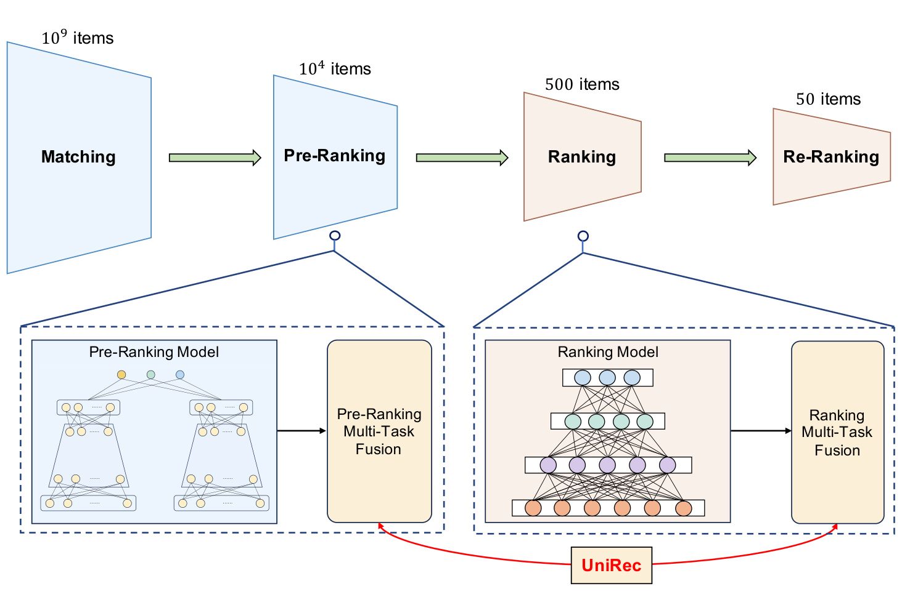
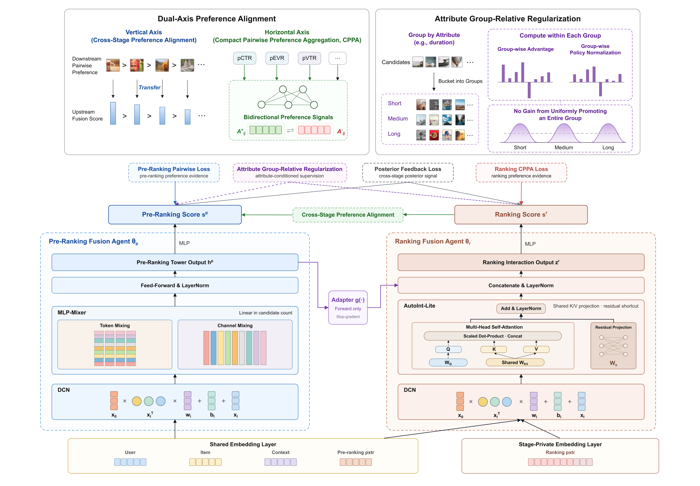
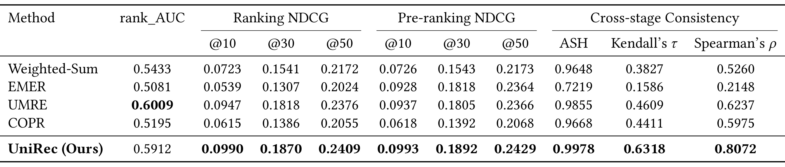
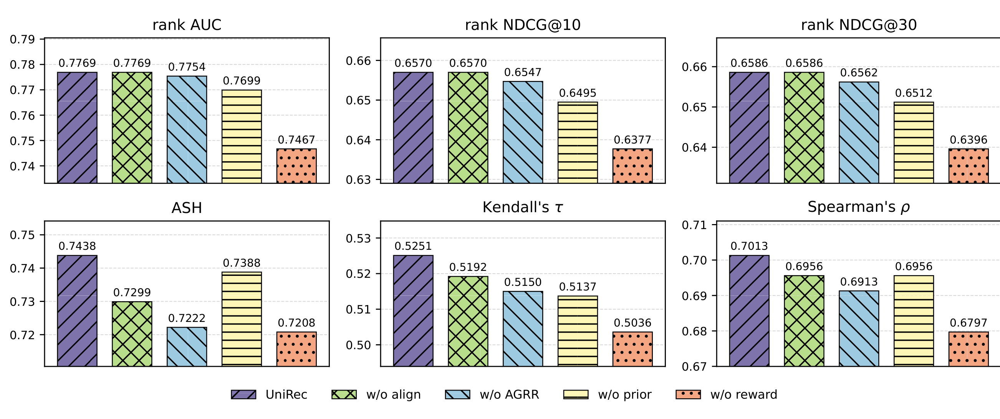
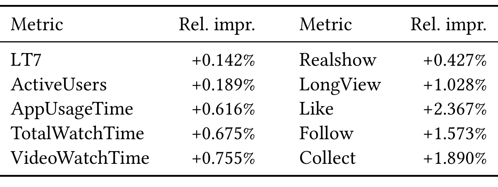
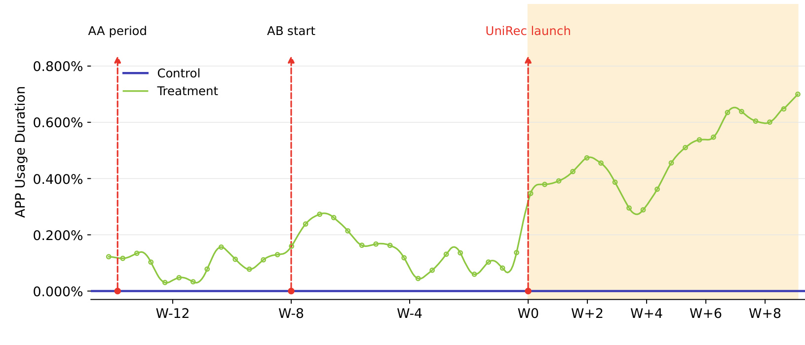
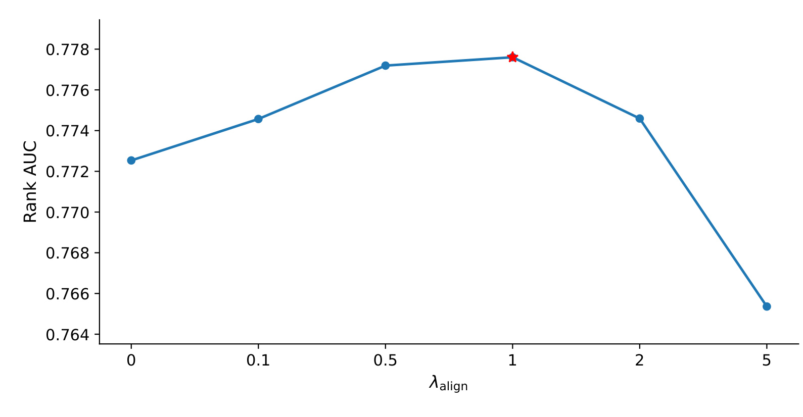
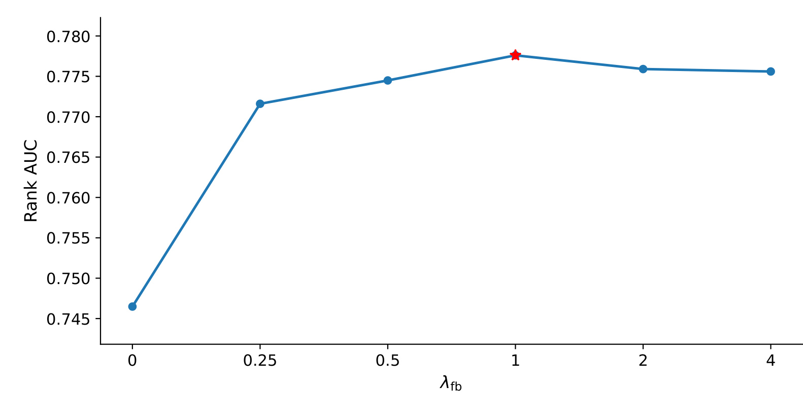
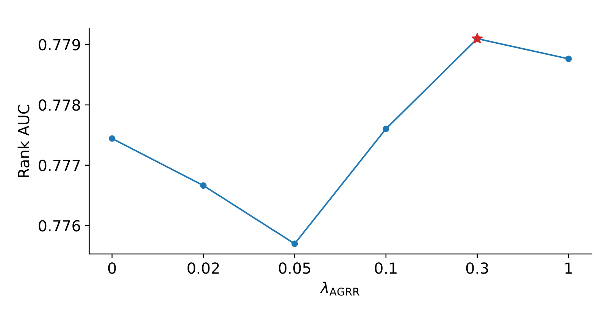

UniRec: Cross-stage Multi-Task Fusion with Preference Alignment for Cascaded Recommender Systems
中文译名：通过偏好对齐实现级联推荐系统的跨阶段多任务融合。第一作者 Lingyuan Kong，作者团队均来自快手；通信作者 Jingxin Liu。主类别：推荐算法。首版公开日期为 2026 年 9 月 10 日（UTC），本轮阅读日期为 2026 年 9 月 14 日（Asia/Shanghai）。
论文链接：arXiv:2609.11052。未核验到本文独立官方代码或项目页。PDF 中的会议年份、Conference’17 与 DOI 仍有模板占位内容，本文按 arXiv 预印本记录，不将其当作已确认的会议录用。
1. 背景和问题
粗排与精排分别优化会造成跨阶段偏好不一致：粗排可能提前滤掉精排偏爱的物品，而精排独立调整后的融合规则又可能抵消粗排已有的改进。
这里的“融合”有很具体的含义：同一个物品已经拥有点击、播放、点赞、关注等多任务预测分数，线上系统还需要把这些分数合成一个标量，才能执行候选截断。预测模型回答不同事件发生的可能性，融合模块决定这些事件之间怎样取舍。两个预测器对各自任务都更准，并不保证它们经过不同融合规则后选出的内容彼此兼容。UniRec 把研究对象放在后一层，尝试共同训练粗排和精排的融合模块。
级联结构使这种分歧有方向性后果。粗排先处理大量候选，承担节省计算的责任；精排只看粗排留下的子集，使用更丰富的特征和更复杂的网络。在这一流程中，精排无法重新找回已经被粗排剔除的内容。若粗排融合强调点击而精排更强调观看质量，点击率稍低但观看价值更高的视频可能在进入精排之前就消失。单独提高精排在现有候选上的排序分数，既不能证明丢失候选问题已消除，也不能保证新精排的偏好仍与旧粗排一致。论文关注的是两阶段之间的候选保留关系和偏好关系，而不只是某一个模型的单点准确率。
把精排分数当教师信号回传给粗排，是一条已有的路径。引言讨论的 COPR 等工作通过蒸馏或偏好约束，改善上游与下游之间的协调。但作者指出，最终作出截断决定的融合层仍可能独立设计：即便粗排内部某一任务预测更贴近精排，若多任务合分采用另一套权重和函数形状，最后的标量排序仍然可以偏离精排。本文的差异在于把两个融合器放在同一训练图里，让它们共享部分表示，并明确学习跨阶段的相对次序。这里需要保留限定词“融合器”，不能扩大成召回、粗排骨干、精排骨干和重排全部端到端学习。
另一个背景是单阶段融合方法的表达能力在增强。手工加权式把目标间的交换关系写在公式和系数中，表达清楚但个性化能力有限；搜索系数能够降低人工调参负担，却仍受预设函数限制；可学习融合网络能根据用户、物品和列表上下文调整合分方式，但如果两个阶段分别训练，强大的表达能力也可能产生两套更不一致的偏好。论文把 UMRE、EMER 与 COPR 放入比较，正是为了区分单阶段融合能力与跨阶段协调的贡献。不过它没有给出所有工业方法的统一大规模竞赛，读者不能据此把有限基线结果推广为对整个相关领域的全面领先。
联合融合还带来两个新的困难。第一是监督规模。工业排序往往同时处理几十项业务目标，每项预测都能为候选对提供相对偏好。若每个目标、每个物品对都独立建立可微损失节点，候选数的平方项与目标数相乘，训练图会变大。为了融合更多目标而扩大损失图，本身可能成为训练瓶颈。第二是目标与内容属性之间的相关性：长视频通常更容易获得较大的总观看时长信号。一个自由度较高的融合器可能主要通过抬高长视频群体的整体分数来降低损失，而没有改善相似时长视频内部的质量区分。这样的变化能改变曝光分布，不能自动解释为用户体验改善。
UniRec 分别用紧凑偏好聚合和属性组相对正则处理这两个问题。前者利用同一候选对只存在两个偏好方向的代数结构，把多项同向证据先相加，减少重复非线性计算；后者把视频时长相近的候选放在一起，要求模型在组内匹配相对优势。二者都依附于真实的融合问题：聚合保留目标权重，正则复用原有偏好证据，并未新增一个独立训练的奖励模型。这种安排值得关注，因为它使效率改动与质量约束之间的关系较清楚，也留下可以单独复现和质疑的公式边界。
阅读本文还必须区分三种“一致”。阶段之间的分数绝对值相同，是数值校准一致；两个阶段在同一候选集合上给出相似顺序，是排序一致；精排最终想要的前列物品能够穿过粗排，是集合保留一致。论文主要监督第二种，并用 ASH 衡量第三种，不要求两阶段融合分数具有相同的数值尺度。这个选择适应了粗排、精排特征和预测校准不同的实际情况。但一致性本身也不是最终目的：两个阶段如果共同偏向低价值内容，彼此一致并不能挽救推荐质量，因此仍需同时观察排序质量、真实反馈和线上目标。
最后，本文的“生产部署”属于作者在论文中的报告，外部读者可以核验其文字、表格和内部逻辑，不能独立访问平台运行状态。公开实验使用 RecFlow，工业实验使用快手内部数据，两个数据源对应的候选量、任务数和指标数值分布均不同。把公开集的极高候选保留率直接当作全平台线上保留率，会越过证据边界。下面先拆开计算图与目标函数，再分别阅读两类离线证据和线上实验，避免把一个总体框架的叙述压缩成单个提升数字。
候选对监督还依赖对请求与物品身份的可靠对齐。一个阶段记录的是进入集合，另一个阶段记录的是实际评分集合，如果仅凭曝光项目拼接训练样本，就会遗漏大量阶段间被过滤的内容。RecFlow 能记录全流程淘汰候选，因此适合验证这一研究问题；只有曝光日志的系统则不能直接复制同样的评估。这个数据前提决定了 UniRec 的迁移成本：需要把候选集合、预测版本和反馈时间关联起来，才能判断偏好分歧到底来自融合器、骨干版本变化还是样本选择。论文把模型、目标和数据对应关系一起放入研究范围，工程实施也必须保留这三个层次。
2. 方法
2.1 双塔耦合与梯度路径
原文问题定义用嵌套候选集表达级联关系：召回候选、粗排输出、精排输出逐层缩小。每阶段融合器把该阶段可用特征和预测映射成分数，再进行 TopK 截断。其基本形式对应原文式（1）至（4）：
符号解释：$\mathcal I_c$ 是召回后的候选集合，$\mathcal I_p$ 是粗排保留集合，$\mathcal I_r$ 是精排输出集合；$i$ 表示物品，上标 $p$ 与 $r$ 分别表示粗排和精排；$x$ 是输入，$f$ 是融合器，$\theta$ 是可训练参数，$s$ 是用于排序的融合分数。
符号解释：$K_p$、$K_r$ 是两阶段截断数量；$\operatorname{TopK}$ 保留分数最高的指定数量物品；$\mathcal L$ 是联合目标。原文式（3）的对照是分别最小化 $\mathcal L_p(\theta_p)$ 和 $\mathcal L_r(\theta_r)$，式（4）改成上述联合问题。这种联合训练不代表离散 TopK 本身具有可微梯度。

图 1 上半部画出从大规模物品库到召回、粗排、精排和重排的漏斗，下半部放大粗排与精排内部，分别画出预测模型和多任务融合模块。红色连线连接的是两个融合模块，而不是把所有预测网络接成一个网络。这一位置选择解释了论文为何能在保留现有业务骨干的情况下尝试联合优化，也解释了它为何仍不能修复召回之前就没有出现的物品。粗排处理的候选量显著大于精排，两个融合塔不能简单使用同样昂贵的结构；图中不同阶段的数量是架构示意，具体实验另有候选规模，不能把它们混成一条统一训练配置。 图 1 中单独画出的融合框还提示，预测分数与最终排序分数不是同一个对象。优化某个点击预测头，和优化点击、观看及互动信号的合成规则，改变的是不同决策环节。该图没有展示逐项损失或梯度停止位置，因而仅凭红线不能断言上下游所有参数都相互求导。后续图 2 才定义共享输入表示、阶段私有输入和适配器；把两幅图连起来读，才能理解“联合”的范围是训练时的融合表示和目标，而线上仍然保持先粗排、再精排的执行顺序。部署时每阶段独立运行的边界也因此得到保留。
两塔共享用户、物品、上下文与粗排预测的嵌入，精排预测只进入精排私有嵌入。第 4 节开头“只接收预测输出”的概述与第 4.1.1 节具体输入定义并不完全一致，本文按后者解释为预测加公共特征。每个阶段先经过 DCN 显式特征交叉，再进入自己的融合塔：粗排选择候选规模下成本较低的 MLP-Mixer；精排选择 AutoInt-Lite，用共享键值投影、单层交互和小规模注意力头减少开销，并加入线性捷径。原文称粗排塔成本随候选数线性增长，但未给出足以完全复刻的层宽、混合维度和硬件测量配置。

图 2 底部是公共嵌入与精排私有嵌入，中部左右分别是粗排与精排融合塔，上部把偏好对齐和属性正则单独展开。左侧塔先进行特征交叉，再用混合模块处理输入；右侧塔用简化注意力形成精排表示。中间的适配器把粗排表征作为显式特征送到精排侧，但标有停止梯度的边界。与这条单向特征路径不同，公共嵌入同时接受两个阶段目标的梯度，因此两阶段可以通过共同的表示参数相互影响。图中“两个 agent”是两个可学习融合模块，不是拥有自然语言推理和工具调用能力的自主智能体。 框架上方的纵向偏好对齐用精排的相对次序监督粗排，而横向偏好聚合把点击、播放和互动等多任务信号压缩为正反两种证据。这里的压缩是对固定候选对按方向求和，没有把全部任务变成一个多数投票标签，少数方向仍保留对应权重。右上角的正则示意把候选按时长分桶，比较桶内相对优势，因此与对全体候选做一次归一化不同。把这三个区域合在一起，图要表达的是共享表示提供协同训练基础，对齐提供上游偏好监督，聚合控制损失图规模，正则约束属性组内的排序学习。图本身不能证明长视频曝光偏差已被完全消除，也没有给出线上延迟的实测分布。 适配器对应原文式（5）：
符号解释：$h_i^p$ 是粗排塔输出，$z_i^r$ 是精排塔自身表示，$g$ 将粗排表示投影到需要的维度，方括号表示拼接，$\operatorname{sg}$ 表示停止梯度，MLP 输出最终精排分数。精排损失可以更新适配器参数，但不能沿这条路径直接改写粗排塔；共享嵌入路径仍保持耦合。这样既让下游看见上游的决策表征，又避免精排通过适配器任意牵引粗排中间层。
2.2 双轴偏好对齐与紧凑聚合
每个预测目标为同一请求内的候选对提供一个方向标签，平分项排除。式（6）与式（7）分别表示阶段内偏好监督和跨阶段对齐：
符号解释：$m$ 是任务编号，$M$ 是任务总数，$p_i^{(m)}$ 是第 $m$ 项预测，$w_m$ 是任务重要性权重，$y_{ij}^{(m)}$ 为正负方向标签，$\delta$ 是融合分数差，$\operatorname{Softplus}(u)=\log(1+\exp u)$。该损失使融合顺序尽量兼顾各目标的预测顺序，目标冲突时由权重和梯度共同决定折中。
符号解释：$y_{ij}^r$ 是精排给出的停止梯度偏好标签；对齐仅发生在精排实际评分的共享候选集 $\mathcal I_p$。使用顺序标签而非拟合精排绝对分数，避免把跨阶段尺度校准强行绑在一起。已经被粗排丢掉且没有精排评分的物品不参与这项对齐，因此它仍受日志可见性的限制。 横向聚合观察到，固定一对候选后，所有目标的损失参数只有正、负两个方向。式（8）与式（9）把各方向权重先相加：
符号解释：$A^+$ 累积支持物品 $i$ 优于 $j$ 的任务权重，$A^-$ 累积反向权重，$\mathbf 1$ 为指示函数，$\delta_{ij}^r=s_i^r-s_j^r$。这与逐目标加权求和是代数恒等变换，而不是近似压缩。两类证据同时为正时表示目标存在分歧，不能只保留净差而丢掉其总量。两塔都可使用聚合形式。 CPPA 减少的是重复的可微 Softplus 节点及其反向图，物品对仍然有平方规模，计算各任务标签及聚合权重仍需要处理任务维度。因而原文从 $O(MN^2)$ 到 $O(N^2)$ 的表述应限定到可微损失部分，$N$ 表示候选数。若实现错误地让任务权重参与不同位置的可微计算，或改变采样掩码和归一化分母，就可能破坏与原式的等价性；复现时应直接比较两种写法的损失及参数梯度，而不只看最终指标相近。 真实曝光反馈作为辅助信号进入式（10）：
符号解释：$\mathcal I_e$ 是曝光物品集合，$r_i^{\mathrm{obs}}$ 是已观察反馈，$s$ 可取粗排或精排融合分数。这里用额外上标区分原文后续再次使用的奖励符号。曝光仅覆盖候选中的一小部分，反馈不能直接为全部未曝光候选提供真实偏好，因此与广覆盖的预测先验并用。
2.3 属性组相对正则及其边界
AGRR 从精排偏好证据构造候选奖励，再按视频时长分位数划桶。式（11）与式（12）为：
符号解释：$\widetilde r_i$ 是净偏好支持占总支持的比例，在分母为正且权重非负时位于负一到一；$\mathcal G_g$ 是第 $g$ 个属性桶，$\mu_g$、$\sigma_g$ 是桶内奖励均值和标准差，$\sigma_{\min}$ 防止近常数奖励造成除数过小，$A_{\max}$ 限制优势幅度，clip 为逐项截断。候选少于 $n_{\min}$ 的桶跳过，$n_{\min}$ 是最小数量门槛。原文未完整说明零总证据分母的实现处理，复现需明确掩码或稳定项。 优势只对本桶内候选比较，并复用主目标的任务权重，因而无须额外奖励模型。需要纠正的是：中心化后的未截断数值和为零，但经过逐项对称裁剪后一般不再严格零和，原文紧接式（12）的零和论证缺少条件。所幸下一步的桶内 softmax 对整桶分数增加常数天然不变，并不需要优势严格零和来成立。式（13）与式（14）可以展开为：
符号解释：$q$ 是固定的组内目标分布，$\tau$ 是优势温度；$\pi_\theta$ 是融合分数归一化得到的组内策略，$\mathcal B$ 是通过数量门槛的桶集合，KL 是从目标分布到策略分布的相对熵。归一化集合必须相同，目标停止梯度。对每个桶的分数求导得到策略概率减目标概率，并受到桶平均系数缩放；策略接近目标时梯度趋于零。 这里借鉴的是组相对比较思想，没有采样大模型回答、环境 rollout 或策略梯度更新过程。它能明确鼓励同一时长范围内的优劣区分，但若所有候选分数在某个桶整体上移，正则保持不变，不能因此说它对这种上移施加了惩罚。全局成对主损失仍比较跨桶候选，可能继续偏爱某一时长群体。论文通过小权重正则改善经验结果，不等于从数学上完全排除了主目标利用属性差异的方向。两塔都用 AGRR，上游仅接收能与下游候选对应的奖励，并按自己的分桶处理；没有下游对应项的候选被排除。
2.4 联合目标与分阶段服务
原文式（15）把各部分加总：
符号解释：五个 $\lambda$ 分别控制上游对齐、上游反馈、下游反馈、上游正则和下游正则的权重；其余损失已在前三节定义。一次反向传播同时更新两阶段融合参数及共享嵌入，精排专有参数不直接接收对齐标签的梯度，但可通过共享表示受到训练耦合的影响。 服务时两塔导出为独立图，共享嵌入表复制到各阶段。作者称训练耦合不引入服务延迟，其合理含义是线上不需要跨阶段反向传播或等待联合训练计算；不能进一步推成任意融合基线下延迟完全相同，因为塔结构、输入特征、适配器传递和部署实现仍可能改变服务成本。本文没有给出延迟分位数、峰值内存或高负载吞吐表，生产系统迁移时需要独立测量。
3. 实验结果
3.1 数据切分、候选集合与指标
RecFlow 是公开的多阶段短视频日志，覆盖 2024 年 1 月 13 日至 2 月 18 日共三十七天，包含约四万二千用户、九百三十万请求、三千八百万曝光样本和十九亿阶段记录。论文实际使用二月一日至八日的八天曝光数据，并利用逐阶段被淘汰候选重建嵌套集合。每项样本包含跨阶段候选信息与五十步行为序列，六个二元标签加播放时长构成七个目标；播放时长按加权逻辑回归方案处理。因此大数据集的总规模不等于本文全部进入训练的规模。
由于公开数据没有提供原始线上预测分数，作者先用二月一日至四日训练七头 DSSM 和 DIN，分别模拟粗排、精排预测骨干，然后冻结参数。二月五日至七日训练融合器，二月八日测试；所有基线使用相同缓存预测分数。这个时间切分有助于分离预测模型训练与融合训练，也再次说明联合优化范围不包含骨干本体。不过共享嵌入属于新融合模型输入表征，仍可训练，不能把“骨干冻结”误读成所有输入表示固定。
工业数据则从快手生产日志采样约十万用户、超过百万请求，每次请求涉及约五百候选，后续减少到约十个曝光项目，并处理几十项预测目标。工业消融以时间顺序切分，但没有像 RecFlow 一样列明全部具体日期和切分规模。公开集中的七目标场景与工业几十目标场景对于 CPPA 的收益预期不同，训练效率数字主要服务于后者。二者均来源于短视频推荐，也意味着结果还没有覆盖电商购买、广告转化或长周期内容消费等任务。
排序质量报告每请求内的精排与粗排 NDCG，截断位置分别为十、三十、五十。rank_AUC 则把不同请求的候选混在一起，以反馈是否为正构成二元标签。前者主要关心每个请求内部的优先次序，后者还受到跨请求分数尺度与样本分布影响。ASH 衡量精排前十项目有多少被粗排前五十保留；Kendall 与 Spearman 衡量请求内两阶段顺序相关。三类指标必须合看，因为保留率提高并不自动代表用户价值提高，混合请求 AUC 下降也不能被其他指标改善悄悄省略。
3.2 公开数据的排序质量与一致性

表 1 的列按精排质量、粗排质量和跨阶段一致性排列，行依次是加权融合、EMER、UMRE、COPR 和 UniRec。UniRec 的精排 NDCG@10 为 0.0990，对照 UMRE 的 0.0947，绝对差为 0.0043，按后者计算相对增幅约 4.54%；其余两个精排截断位置也较高，粗排三个截断位置同样占优。但 rank_AUC 为 0.5912，低于 UMRE 的 0.6009，差距是 0.0097。因而作者摘要中总体更优的表述不能替代逐指标阅读，本文证据是请求内排序和一致性更强，同时存在跨请求 AUC 的取舍。不同指标分母与计算集合不同，不能把 NDCG 的相对提升解释为点击率提升。
一致性部分的 ASH 为 0.9978，高于 UMRE 的 0.9855，绝对差 0.0123；Kendall 为 0.6318，Spearman 为 0.8072，也高于各基线。这说明在当前日志、候选和截断设置下，精排希望保留的前列项目更容易穿过粗排，且两阶段整体次序更相近。EMER 的 ASH 仅为 0.7219，虽然其粗排部分 NDCG 不算最低，仍暴露出独立融合器可能朝不同方向优化的问题。该现象支持研究跨阶段关系，但并不能证明所有独立训练方法都会出现同样程度的失配；其损失配置、容量和调参预算也会影响比较。表中未给出多次运行的方差或显著性，因此小幅数字差异应视作当前实验点估计，而非稳定收益下界。
这组结果还说明，不能只拿 ASH 接近一来判断上游已没有改善空间。首先它只针对特定下游前十与上游前五十的定义，不是所有候选均被正确排序；其次它以当前精排的偏好为参照，如果精排本身有偏差，高保留率只是让这种偏差更一致地传递；第三，公开日志记录的候选分布限制了评估范围，新策略改变候选生成后，离线结果可能不再成立。复现时应保留请求级候选对应关系，并同时检查更紧、更多样的截断配额，而不只重复一个高保留率配置。
3.3 工业消融与训练效率

图 3 的六个子图使用不同纵轴范围，不能只凭柱形高度比较影响大小。上排是精排 AUC、NDCG@10 和 NDCG@30，下排是 ASH 与两种秩相关；五种颜色分别代表完整模型和移除对齐、属性正则、预测先验、曝光反馈的变体。完整模型 AUC 为 0.7769、NDCG@10 为 0.6570，这些数值来自工业数据，不能与表 1 的公开数据 AUC 直接比较高低。移除曝光反馈后，AUC 降至 0.7467，NDCG@10 降至 0.6377，六项指标整体下降最明显，说明真实后验行为对权衡多任务预测十分关键。
移除先验偏好后，AUC 为 0.7699，而 ASH 从 0.7438 变到 0.7388，排序质量受影响比保留率更突出。移除 AGRR 后，ASH 为 0.7222，按图中四位小数计算绝对下降 0.0216；正文报告下降 0.0215，可能来自未舍入值，但原文没有提供原始数值，应保留这一末位差异。其精排 NDCG@10 仍为 0.6547，说明属性正则的显著变化主要体现在阶段间协调。移除对齐后，三项精排指标与完整模型显示相同数字，而 ASH 降到 0.7299，差为 0.0139。该结果支持上游对齐的作用，却不能由相同的四位小数推出精排训练完全不受影响，因为共享嵌入仍接收双侧梯度。
消融还有两个解释边界。首先，删除某项损失同时改变了整体优化目标，不能把单个指标下降看作模块贡献具有可加性；组合收益可能有相互作用。其次，图中没有视频时长曝光分布、分桶质量变化或受影响人群切片，因此 AGRR 的改善与其“减少属性偏差”的机制解释相容，但尚不足以独立证明具体偏差通道已被隔离。若要检验机制，应检查每桶内排序、跨桶流量变化、时长归一化观看质量，并与简单损失缩放或梯度正则对照，避免把任何稳定训练收益都归因到组相对设计。
CPPA 的消融未另列图表，因为它与逐目标写法数学等价，原文报告相同排序表现，同时训练吞吐提高 30.1%，每样本处理时间减少 23.1%。这两个比例彼此大致符合吞吐与时间的倒数关系，不应当作两项独立的业务收益相加。文中没有给出完整硬件、批大小、各阶段耗时和峰值显存表，因而无法据此预测另一个候选量或任务数下的提速幅度。它证明的是当前实现中减少重复非线性图节点有工程价值，而不是把全模型计算复杂度降成与目标数无关。
3.4 线上收益与观察窗口
在线实验替换粗排和精排融合模块，其他组件保持不变。作者报告一周实验使用随机选择的百分之二十真实流量，相对生产融合基线比较。论文没有给出实验的具体日历日期、用户与请求数量、分流单元、置信区间或显著性检验方式；“当前已全量部署”也只能按作者公开声明记录。上线结果比离线排序更接近业务价值，但这些缺失使外部读者难以复核统计可靠性与跨周期稳定性。

表 2 分成左右两组列，每组都由指标名称与相对提升构成，不能把右半边当成另一套基线。应用使用时长提高 0.616%，总观看时长提高 0.675%，视频观看时长提高 0.755%，活跃用户提高 0.189%；LT7 为 0.142%，Realshow 为 0.427%，LongView 为 1.028%，点赞、关注、收藏分别为 2.367%、1.573% 和 1.890%。这些是相对变化，不是百分点，也不能从平台日活规模直接反推新增多少用户，因为流量采样、统计单元和指标去重方式未公开。不同互动指标的基数相差很大，较高的相对百分比不必然意味着更大的绝对价值。
十项已报告指标均为正，支持在该实验配置下没有观察到表内目标之间的负向交换，但“没有报告下降”不等于所有业务指标都没有下降。尤其是多样性、内容供给分布、时长桶曝光、商业收益、弱势群体体验和系统延迟没有出现在表中。对 AGRR 而言，这张表展示最终策略效果，却没有直接展示属性分布是否更健康；对联合融合而言，它也没有把共享表示、对齐和正则拆成多个线上实验。因此合理结论是完整方案获得作者报告的总体正收益，模块贡献仍主要由工业离线消融支持。应用使用时长还同时受到访问频次和单次使用深度影响，总观看时长与视频观看时长的定义也可能不同；原文没有逐项给出计量口径，不能通过相近百分比推断它们测量的是同一事件。互动类目标通常具有较低发生率，如果没有基数和误差范围，无法判断百分比差异有多少来自真实行为变化、有多少来自统计波动。将这些指标作为联合效果的证据时，应保留各自的独立含义，并要求上线复盘给出统一时间窗下的绝对分母。复现实验需要根据实际业务确定独立的护栏指标，而不能把这十项结果当作无条件迁移承诺。

图 4 横轴使用 W−12 到 W+8 等相对位置，纵轴是应用使用时长相对变化，蓝线为控制、绿线为处理，并标出 AA 阶段、AB 开始和 UniRec 上线三个时点。上线后绿色曲线抬升，但仍有明显回落与再上升，说明整体趋势不能简化成每天单调增加。对照线接近零使相对变化更易读，却不能提供样本量和不确定区间。图中的前置实验与上线后观察区间明显长于正文所称的一周汇总口径，不能把表 2 的一周统计值解释成整条曲线平均，也不能自行把 W 标签换算成具体日历日期。
上线前处理组已经出现波动，图中没有提供这种波动来自试验准备、其他策略差异还是自然噪声的解释。因而它适合辅助观察策略切换后的持续性，不能代替严谨的随机对照估计。对工程跟进最有用的是核验三个时点的定义、实际分流稳定性、指标聚合粒度及灰度节奏，再检查上线后回撤是否集中在某些用户或内容属性。论文只给这一项时序曲线，其他九项线上指标是否同样持续改善，当前没有相应时间序列支持。
3.5 参数敏感性与证据边界
附录 A 逐次改变一个系数，其他系数、骨干、数据片段与随机种子固定；红星标记作者最终采用的值。它们属于工业流实验，原文把这一范围内的 AUC 变化与表 1 的基线差距类比，但表 1 来自 RecFlow，数据口径不同，这种跨表量级比较不能直接充当稳定性证明。下面三张图分别读取，避免把它们拼接成同一纵轴上的联合调参结论。

图 5 横轴为对齐权重，从零、零点一、零点五、一、二到五，纵轴为精排 AUC。曲线在零点五到一附近较高，权重过大时明显下降，表明更强的下游对齐并不等于更好的联合训练。共享嵌入会将上游目标的变化传递到下游表示，因此这条曲线与“对齐不直接更新精排专有参数”并不矛盾。但零权重对应的 AUC 约为 0.772，而图 3 的移除对齐变体显示 0.7769，二者并不完全一致。论文没有足够细节说明这是数据片段、种子、训练配置还是作图差异，不能替作者选一个解释并写成事实。
红星选在一附近，能够说明作者在当前扫参配置下选择了局部较好的折中点，而不能说明这个权重适用于任意目标数量和候选规模。成对损失的求和或平均方式会改变绝对量级，迁移权重时必须同时迁移掩码、候选对数量和归一化策略。图没有误差带，附近点之间很小的差距也未提供重复实验支持；优先复现趋势与失败区间，比照抄一个系数更有意义。

图 6 改变的是精排反馈权重，取值从零到四。移除反馈时 AUC 明显较低，加入一定权重后迅速改善，在一附近达到红星位置，继续加大后略有回落。这与图 3 中移除曝光反馈影响最大的现象方向一致，说明模型不能仅凭多项预测先验决定业务偏好，真实用户反馈提供了关键的目标校正。需要注意，扫参只涉及式（15）的精排反馈系数，图 3 则从两个阶段移除反馈，二者不是同一个干预，因此不能将两张图的数字逐点相减解释为粗排反馈的独立作用。
反馈较稀疏又受曝光策略影响，强行增加权重可能放大当前策略下的选择偏差。图中中间范围相对平稳，给出一定调参容忍度的经验线索，却没有证明未曝光物品也获得无偏监督。复现时除 AUC 外，还应观察请求内 NDCG、上游保留率和不同曝光频次项目的变化；否则可能只是在优化跨请求二元区分，而未改善实际截断决策。原图的单种子设置也限制了对稳定性的结论。

图 7 横轴为 AGRR 系数，纵轴 AUC 的范围较窄，曲线先下降再上升，在零点三附近达到红星位置，一时略低。它提示属性正则并非简单单调受益：较弱系数也可能低于不加正则，而某一中等强度在当前配置更合适。纵轴经过截取，视觉上较大的起伏实际只有数千分点量级，必须按刻度读取，不能把形状夸成性能剧烈震荡。该图仅展示精排 AUC，没有展示每个系数对应的属性分布或 ASH，因此不能据此确定哪个值最能减少时长偏差。
将正则权重解释为约束强度还要结合优势温度、分桶数量、标准差下限和最小桶大小。这些共同影响目标分布尖锐程度与有效样本量，单独复制零点三并不能保证同等优化压力。更完整的验证应同时扫描关键分桶设置，检查稀疏桶的跳过比例、零证据项的处理以及梯度量级，并报告不同随机种子的波动。当前论文给出了可用方向和局部经验点，但还不足以构成完整、可直接搬用的生产参数手册。
4. 总结
4.1 我的判断
UniRec 最有价值的贡献，是把跨阶段问题落到真正执行多任务合分与候选截断的融合层，并区分三种不同联系：共享嵌入的双侧梯度、适配器的单向特征传递、精排偏好标签对粗排的停止梯度监督。只把它概括为“用精排蒸馏粗排”，会遗漏融合器共同适应的部分；只把它称为“全链路端到端”，又会掩盖骨干冻结、离散候选截断和日志可见性限制。其公开结果支持请求内排序与阶段一致性改善，同时 AUC 有取舍，工业线上结论则应保留作者报告和统计细节未公开的边界。
CPPA 的迁移价值较明确：对固定候选对、固定方向标签与权重，重复的非线性项可以在保持损失的前提下先聚合。这类改动适合先作为独立训练优化验证，不必等待完整双塔方案落地。AGRR 更值得以机制假设看待：它为相似属性候选提供相对学习目标，但组内平移不变并不等于对全局属性投机施加了惩罚。论文中的零和推理条件不足，应该修正解释并设计更直接的分布证据，而不是因为在线结果为正就跳过公式核对。
4.2 工程启发与复现建议
第一步可在现有冻结预测分数上实现 CPPA，固定候选对掩码和目标权重，逐批比较原式与聚合式损失、梯度、显存和耗时。这样能把代数等价性与框架实现收益分开，也能发现混合精度、极端分数或归一化位置造成的误差。第二步在具备跨阶段候选标识的日志上重建共享集合，分别监控请求内排序、候选保留率和跨请求校准，避免只优化其中一项就误判整体链路改善。若缺失被淘汰候选的可靠日志，需要先补评估能力。
第三步再加入共享嵌入与适配器，记录每条路径的梯度范数，并用阻断共享梯度、阻断适配器特征和仅用对齐标签的控制实验区分贡献。第四步验证 AGRR 时，应把整桶分数平移作为明确的反例测试，并观察主损失、正则和最终曝光分布是否按预期变化；同时补充时长归一化的质量指标、分桶样本量与长短内容覆盖。只有机制证据和业务护栏都成立，才有依据逐步扩大实验流量。
对大模型系统而言，可迁移的是分阶段选择的一致性问题。例如检索器先过滤证据、重排器再挑选上下文，独立优化也会提前丢失下游偏好的材料。共享候选上的次序约束、保留率指标和属性组内比较都有启发，但本文未做 RAG、语言模型后训练或工具调用实验，不能把短视频收益直接搬到这些任务。将文档长度作为属性分组也是待验证假设，需要确保分组不会抹掉真实相关性。
4.3 局限与后续跟进
主要局限包括四类。其一，公开实验使用重建预测分数，工业实验的数据与完整配置不可获取，外部复现难以严格覆盖生产条件。其二，线上缺少具体日期、方差、显著性和护栏指标，效果的周期稳定性与长期代价仍不清楚。其三，属性正则的数学表述与经验结论之间存在需要补足的环节，尤其是裁剪后零和与整桶偏移的区别。其四，参数敏感性与消融的部分数值口径没有完全对齐，且训练提速缺少硬件分解，限制了结果迁移解释。
后续应优先关注作者是否发布实现和完整超参数，以便确认共享嵌入、候选掩码和服务导出的细节；其次请求补充分桶曝光分布及多种子实验，验证正则究竟改善哪类候选关系；再次比较加入重排阶段后的候选保留与目标冲突，观察双阶段结论是否延续。原文计划扩展到电商和广告，目前仍是未来方向。对现有推荐工程而言，最稳妥的研究顺序是先验证等价聚合，再验证候选关系，最后评估联合融合与属性约束的组合效果。